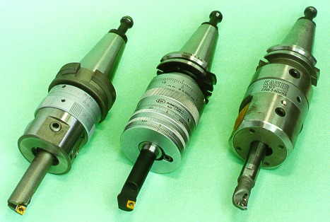

LMP>Research Guidelines>USICAV>Boring with adjustable runout head and balancing system
OBJECTIVES Although boring tools rarely reach 15% of all machining tools,
they are extremely important on process productivity. Since boring is often
applied on parts final machining, that have already a high aggregated cost
from several hours of previous machining, the rubbish making on this level
is highly unwelcome. PROCEDURESThe unbalancing of boring heads caused by cutting tool runout influences on machine vibration level, which influences on machined holes surface quality and shape precision. Aiming to contribute on precision boring process optimization, it is intended to compare the most known boring heads available for sale. All selected boring heads present tool runout adjustment, working on holes from 10 to 25 mm of diameter. Some heads have integrated balancing system. The materials used on assays are aluminum with 15% of silicon, cast iron GGG 30, SAE steel 1045 and SAE steel 4340. There are 5 interesting characteristics on this work.
 Boring Heads |
| Contact:
USICAV Rolf Bertrand Schroeter Prof. Dr. Eng. |
Last update 21.07.2006 |